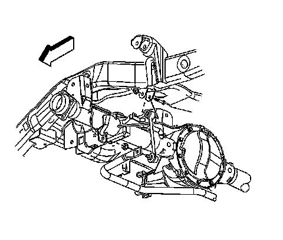

Rear Suspension Coil Spring
Coil Spring Replacement
Removal Procedure
1. Raise and support the vehicle. Refer to Lifting and Jacking the Vehicle.
2. Support the rear axle.
3. Disconnect the electronic suspension control (ESC) sensor, if equipped.

4. Remove the stabilizer shaft link retaining nut from the frame.
5. Remove the lower shock absorber nut and bolt from the rear axle.
6. Lower the rear axle until the springs are fully unloaded.
Important: Note the orientation of the spring as they are directional.
7. Remove the coil spring and the upper insulator.
Installation Procedure
1. Install the coil spring and the upper insulator.
2. Raise the rear axle.
Notice: Refer to Fastener Notice.
3. Install the lower shock absorber retaining nut and bolt to the rear axle.
Tighten the lower shock absorber retaining nut and bolt to 95 N.m (70 lb ft).
4. Install the stabilizer shaft link to the frame.
5. Install the stabilizer shaft link retaining nut.
Tighten the stabilizer shaft link retaining nut to 75 N.m (55 lb ft).
6. Connect the ESC sensor, if equipped.
7. Remove the rear axle support.
8. Lower the vehicle.